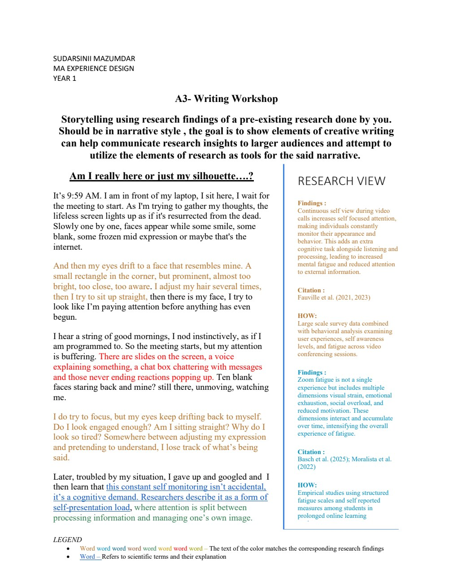
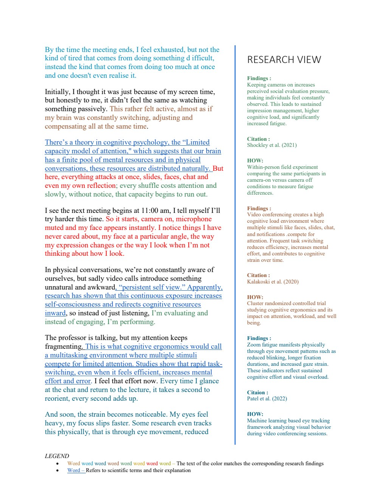

The Translation Gap: From Data to Visceral Empathy
Empirical scientific research into human-computer interaction (HCI) produces profound insights into user well-being, yet these findings frequently remain buried in paywalled journals, dry statistical regression tables, and dense academic syntax. Consequently, product designers, stakeholders, and everyday users rarely internalize their human significance.
This studio project explored: How can creative writing and autoethnographic narrative storytelling serve as rigorous tools to translate quantitative UX and cognitive ergonomics data into immediate human empathy?
Synthesizing 9 Cognitive Ergonomics Studies
The narrative is built upon an empirical synthesis of nine seminal studies examining video-mediated communication fatigue:
- Fauville et al. (2021) & The ZEF Scale: The Zoom Exhaustion & Fatigue scale identifying mirror anxiety, hyper-gaze, physical entrapment, and cognitive load.
- Shockley et al. (2021): Gender disparities in video call fatigue, proving women experience significantly higher social evaluation pressure during camera-on sessions.
- Kalakoski et al. (2020): Working memory depletion and the Limited Capacity Model of mediated message processing.
- Patel et al. & Basch et al.: Eye tracking demonstrating reduced involuntary blinking, longer ocular fixations, and subsequent optical strain.

The Dual-Stream Format & Retrospective
The deliverable is a published creative essay titled "Am I really here or just my silhouette...?". The left column recounts an intimate, minute-by-minute autoethnographic narrative of a student navigating a single relentless morning of online calls: the anxious micro-adjustment of desktop lighting, the paralyzing gaze of self-view, and the physical stiffness of staying in frame.
Simultaneously, the right-hand margin ("Research View") links specific phrases with exact bibliographic citations, explaining the physiological mechanism operating in real time (e.g., optical blink rate dropping from 18 to 4 per minute, cortisol spikes from prolonged mutual gaze).
This project was an academic creative writing workshop deliverable. It consists purely of editorial publication documents and bibliographic synthesis; no physical hardware or software product was developed.
Retrospective & Communication Skills
This project proves a rare ability to synthesize academic literature, distill complex cognitive metrics, and craft compelling narratives that make abstract data urgently human,an essential capability for UX research communication and executive product memos.